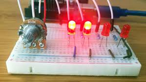

Arduino Control with Potentiometer
Learn how to read analog input from a potentiometer and control an output (e.g., LED brightness).
Step 1: Gather Components
- Arduino Uno
- Potentiometer (10k Ohm)
- LED
- 220 Ohm Resistor
- Jumper Wires
- Breadboard
Step 2: Wiring the Circuit
Connect the potentiometer and LED to the Arduino:
- Potentiometer: Connect the two outer pins to Arduino 5V and GND, and the middle pin (wiper) to an Arduino Analog Input Pin (e.g., A0).
- LED: Connect the anode to an Arduino Digital PWM Pin (e.g., Pin 9) through the resistor, and the cathode to GND.
Step 3: Arduino Code
// Placeholder for Potentiometer Control Arduino Code
const int potPin = A0;
const int ledPin = 9;
int potValue;
int ledBrightness;
void setup() {
pinMode(ledPin, OUTPUT);
Serial.begin(9600);
}
void loop() {
potValue = analogRead(potPin);
ledBrightness = map(potValue, 0, 1023, 0, 255);
analogWrite(ledPin, ledBrightness);
Serial.println(ledBrightness);
delay(100);
}
Step 4: Upload and Observe
Upload the code to the Arduino. Rotating the potentiometer should change the brightness of the LED.
